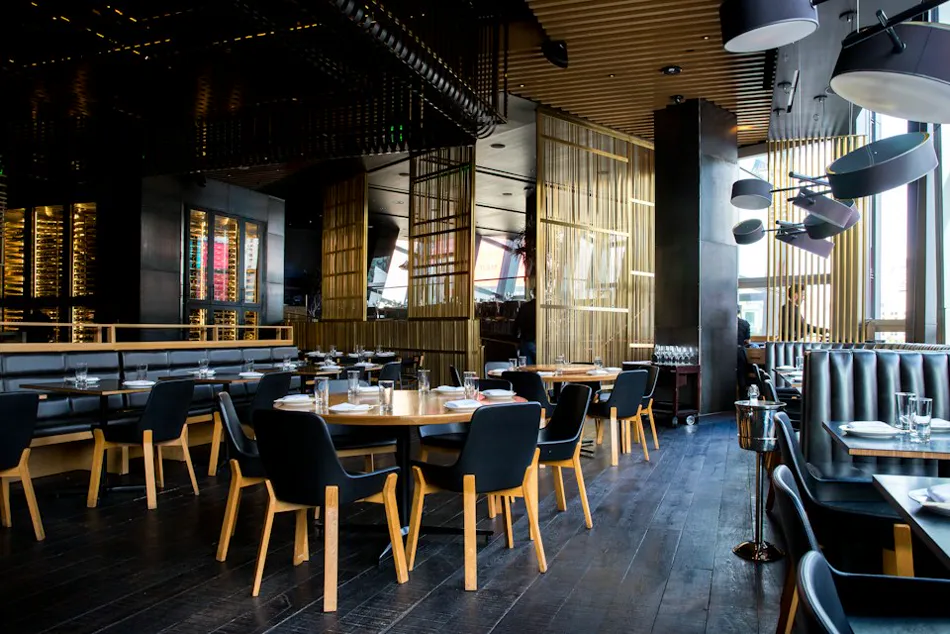

Casa cheia, margem protegida e clientes que voltam.
Reservas, filas, cardápio, desperdício e fidelização geram dados todos os dias. A GSA organiza essa informação para que o gestor saiba onde ganha, onde perde e quem precisa ser chamado de volta.

Problemas comuns no seu dia a dia.
- Reservas espalhadas entre telefone, WhatsApp e Instagram
- Noites fracas sem ação planejada
- Margem por prato desconhecida
- Desperdício sem medição
Aplicações concretas.
Exemplos de uso. O escopo de cada projeto é definido após o diagnóstico.
Reservas sem atrito
Mesa reservada pelo WhatsApp, site ou Instagram, com confirmação e controle de ocupação em tempo real.
Engenharia de cardápio
Margem, giro e popularidade de cada prato para decidir o que destacar, ajustar ou retirar.
Campanhas com contexto
Convites para eventos e noites temáticas para clientes com afinidade e consentimento, com resultado medido.
Desperdício e compras
Previsão de demanda por dia da semana para comprar e produzir melhor.
Atender quem procura. Encontrar quem precisa.
Simulação no contexto do seu segmento. Troque de cenário para comparar.
Escolha um cenário
O que pode ser implantado.
Cada frente pode ser contratada isoladamente ou conduzida pelo CDO consultivo.
- Reservas e fila de espera digitais
- Atendimento omnicanal com IA
- CRM de clientes e campanhas segmentadas
- Análise de margem por prato e desperdício
- Painel de ocupação
Oportunidades a explorar
- Encher dias fracos com quem já gosta da casa
- Ajustar cardápio pela margem real
- Reduzir desperdício com previsão de demanda

Veja como sua empresa pode decidir melhor.
Uma conversa inicial, sem compromisso, para entender seu momento, seus dados e as decisões que mais pesam hoje.